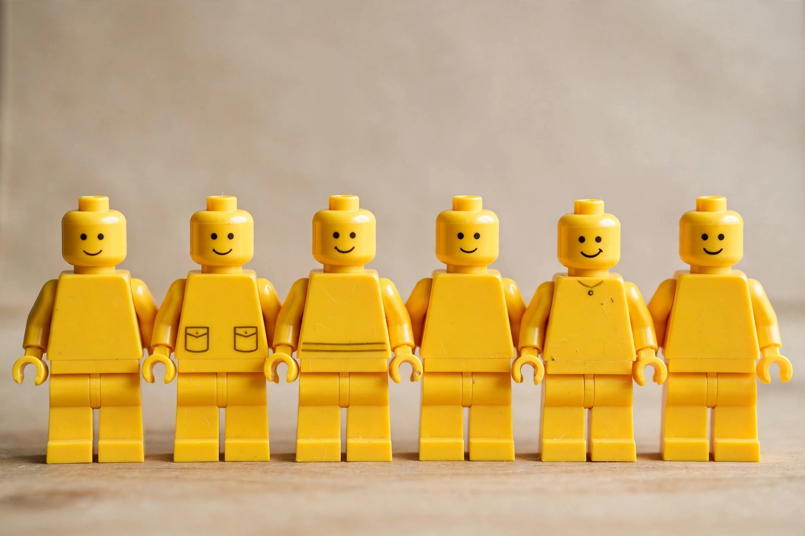

| Type | Toy figure |
|---|---|
| Company | The Lego Group |
| Country | Denmark |
| Availability | 1978–present |
| Height | 4 cm (1.6 in) |
A Lego minifigure, commonly referred to as a minifig, is a small plastic articulated figure produced by Danish toy manufacturer The Lego Group. Minifigures are found within most Lego sets, although some sets contain figures of different designs, and minifigures are also sold separately as collectables and keyrings.
The modern minifigure was designed by Jens Nygaard Knudsen and introduced in 1978, replacing the larger, unarticulated figures of 1974–1975. A standard minifigure is 4 centimetres (about 1.6 inches) tall and consists of a head with a printed face, a tapered torso with movable arms and C-shaped hands, and a hip piece with two movable legs that can sit on studs or stand. The classic face, a simple smile with two solid black eyes, remained standard for decades; from 1989, beginning with the Pirates theme, increasingly varied facial expressions and skin tones appeared, and licensed themes introduced flesh-toned figures from 2003–2004 onward.
Specialised figures include skeletons, robots, ghosts and the shorter-legged "child" and hobbit-sized figures. Related product lines include microfigures, Duplo figures and the larger buildable figures of the Bionicle and Hero Factory lines. In 2010 Lego launched the Collectible Minifigures series, sold in blind packaging.
Billions of minifigures have been produced, and they have become a pop-cultural icon, appearing in films, video games and fan art. Minifigures of real astronauts have flown aboard NASA spacecraft, including on the Juno mission to Jupiter.